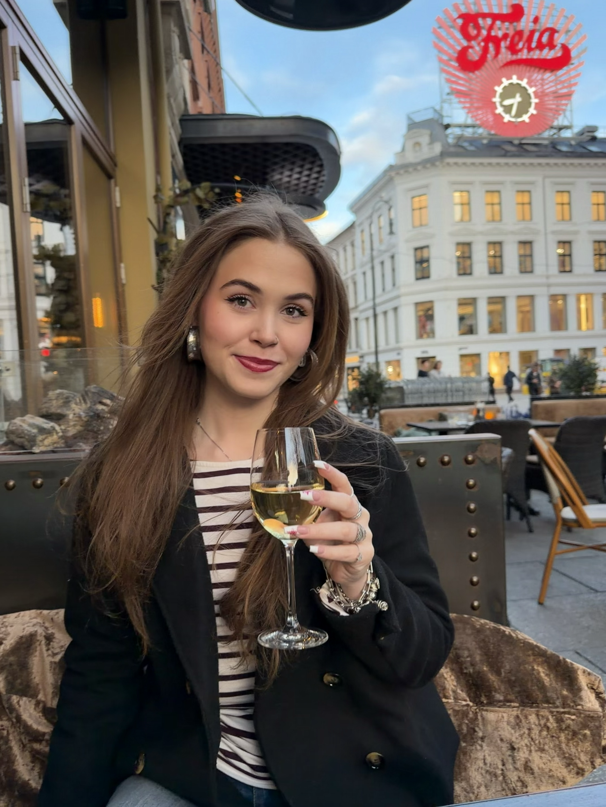

Emilia Skurtveit
Om meg

Om meg
Mitt navn er Emilia Skurtveit, jeg er 21 år og jeg studerer ved Høgskulen på Vestlandet (HVL). Ved siden av studiene jobber jeg som helsefagarbeider i 100 % stilling. Jeg liker å ha mye å gjøre, og trives godt med å kombinere jobb og studier.
Jeg er en veldig sosial person og bruker mye av fritiden min sammen med venner og familie. Jeg er også interessert i mote, sminke og styling, og liker å følge med på nye trender og finne inspirasjon.
Jeg gleder meg til å lære mer om teknologi, programmering og webutvikling gjennom studiene. Jeg synes det er spennende å lære hvordan nettsider og digitale løsninger blir laget, og håper etter hvert å kunne bruke det jeg lærer på en kreativ måte. I fremtiden kunne jeg gjerne tenke meg å kombinere teknologi med interessene mine for mote og skjønnhet, for eksempel gjennom nettsider, apper eller andre digitale løsninger.